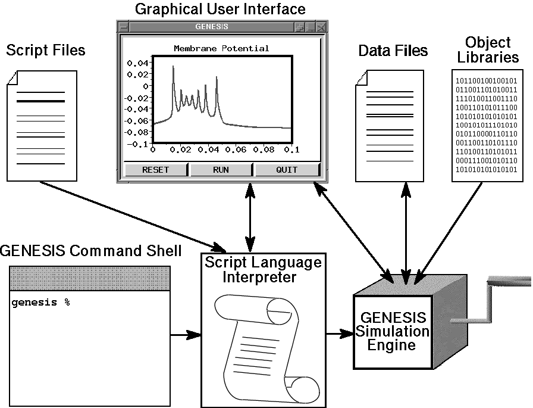

The GEneral NEural SImulation System was designed to allow the consctruction of biologically realistic simulations at many different levels, from subcellular components and biochemical reactions to complex models of single neurons, simulations of large networks, and systems-level models.
The design of the GENESIS simulator and interface is based on a "building block" approach. Simulations are constructed from modules that receive inputs, perform calculations on them, and then generate outputs. Model neurons are constructed from these basic components, such as compartments. and variable conductance ion channels. Compartments are linked to their channels and are then linked together to form multi-compartmental neurons of any desired level of complexity. Neurons may be linked together to form neural circuits. This object-oriented approach is central to the generality and flexibility of the system, as it allows modelers to easily exchange and reuse models or model components. In addition, it makes it possible to extend the functionality of GENESIS by adding new commands or simulation components to the simulator, without having to modify the GENESIS base code.
GENESIS uses a high-level simulation language to construct neurons and their networks. Commands may be issued either interactively to a command prompt, by use of simulation scripts, or through the graphical interface. A particular simulation is set up by writing a sequence of commands in the scripting language that creates the model itself and the graphical interface for a particular simulation. The scripting language and the modules are powerful enough that only a few lines of script are needed to specify a sophisticated simulation. The principal components of the simulation system and the various modes of interacting with GENESIS are illustrated below.

The underlying level of the GENESIS user interface is the Script Language Interpreter (SLI). This is a command interpreter similar to a Unix system shell with an extensive set of commands related to building, monitoring and controlling simulations. GENESIS simulation objects and graphical objects are linked together using the scripting language. The interpreter can read SLI commands either interactively from the keyboard (allowing interactive debugging, inspection, and control of the simulation), or from files containing simulation scripts.
The graphical user interface (GUI) is XODUS, the X-windows Output and Display Utility for Simulations. This provides a higher level and user-friendly means for developing simulations and monitoring their execution. XODUS consists of a set of graphical objects that are the same as the computational modules from the user's point of view, except that they perform graphical functions. As with the computational modules, XODUS modules can be set up in any manner that the user chooses to display or enter data. Furthermore, the graphical modules can call functions from the script language, so the full power of the SLI is available through the graphical interface. This makes it possible to interactively change simulation parameters in real time to directly observe the effects of parameter variations. The mouse may also be used to plant recording or injection electrodes into a graphical representation of the cell. In addition to provisions for plotting the usual quantities of interest (membrane potentials, channel conductances, etc.), XODUS has visualization features that permit such things as using color to display the propagation of action potentials or other variables throughout a multi-compartmental model, and to display connections and cell activity in a network model.
The "GENESIS Simulation Engine" consists of the simulator base code that provides the common control and support routines for the system, including those for input/output and for the numerical solution of the differential equations obeyed by the various neural simulation objects.
In addition to receiving commands from the SLI and the GUI, the simulation engine can construct simulations using information from data files and from the pre-compiled GENESIS object libraries. For example, the GENESIS "cell reader" allows one to build complex model neurons by reading their specifications from a data file, instead of from a lengthy series of GENESIS commands delivered to the SLI. Similarly, network connection specifications may be read from a data file with the "fileconnect" command.
The GENESIS object libraries contain the building blocks from which many different simulations can be constructed. These include the spherical and cylindrical compartments from which the physical structure of neurons are constructed, voltage and/or concentration activated channels, dendro-dendritic channels, and synaptically-activated channels with synapses of several types including Hebbian and facilitating synapses. In addition, there are objects for computing intracellular ionic concentrations from channel currents, for modeling the diffusion of ions within cells (e.g., concentration pools, ionic pumps, and buffers), and for allowing ligand gating of ion channels (e.g., magnesium blocking for NMDA channels).
There are also a number of "device objects" that may be interfaced to the simulation to provide various types of input to the simulation (pulse and spike generators, voltage clamp circuitry, etc.) or measurements (peristimulus and interspike interval histograms, spike frequency measurements, auto- and cross-correlation histograms, etc.).